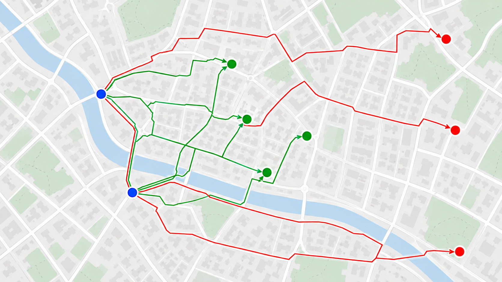

A Shortest-Path Proximity Relation
A compact graph model that justifies candidate selection exactly.

Graph and matrix formulation
Let $G=(V,E,w)$ be a directed travel graph with non-negative edge lengths. Let $S=(s_1,\ldots,s_m)\subseteq V$ be the sources and $T=(t_1,\ldots,t_n)\subseteq V$ the targets.
The shortest-path distance $d_G(s_i,t_j)$ is directed and therefore need not equal $d_G(t_j,s_i)$.
For radius $r\geq0$, the accepted relation is $$R_r=\{(i,j):d_G(s_i,t_j)\leq r\}.$$
Here the radius may represent routed metres or routed duration; when time is used, an assumed average movement speed is needed only for the geographic candidate screen.
The same evidence is retained in the source-by-target matrix $$D_{ij}=d_G(s_i,t_j),\qquad D\in(\mathbb{R}_{\geq0}\cup\{\infty\})^{m\times n}.$$
Candidate selection is a safe exclusion rule
Let $\delta(x,y)$ denote great-circle distance. Since $\delta$ is a metric, every path $P=(v_0=s,\ldots,v_k=t)$ satisfies $$\delta(s,t)\leq\sum_{\ell=1}^{k}\delta(v_{\ell-1},v_\ell)\leq \sum_{\ell=1}^{k}w(v_{\ell-1},v_\ell).$$
Minimising the right-hand side over feasible directed paths gives $\delta(s,t)\leq d_G(s,t)$.
If $\delta(s,t)>r$, then necessarily $d_G(s,t)>r$. The pair cannot be a routed match and may be removed before any OSRM query without changing $R_r$.
Candidate selection therefore uses $C_r=\{(i,j):\delta(s_i,t_j)\leq r\}$. It is a lower-bound screen, not an approximation. Every true routed match remains in $C_r$.
Retained pairs still require shortest-path evaluation: a short geographic distance does not guarantee a short network route.